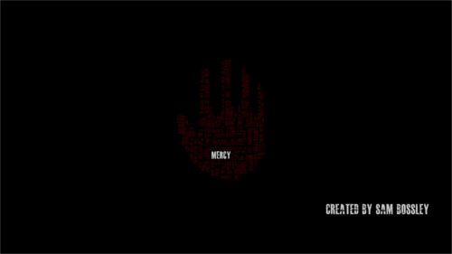

2015 - December 16, 2015
This project was inspired by the song "Mercy" by Muse in their 2015 album, Drones. I greatly enjoyed this particular song and was interested in creating a lyrical video for the song.
I first looked for a font that described the mood of the song. The font I chose was Masterplan by Billy Argel because it looked rough and worn, very fitting for a song about oppression and receiving mercy from said oppression. I also chose to use the colors black, white, red, and other shades of red (Hexidecimal #330000) to symbolize opposing sides, bloodshed, and war. At this point I was unsure how to successfully create an active lyrical website "video."

After a period of time, I stumbled upon Bartek Szopka's wonderful Impress.js javascript plugin. This plugin allows text to be arranged in a dynamic layout and can be animated to create very cool text transition effects. This plugin inspired me once more to create a animated lyrical website in a similar fashion. During the process, I realized that the words seemed to form a hand when zoomed out. This intrigued me and I proceeded to craft the words to resemble an open hand. The hand represented reaching out as a defiance to the oppression described in the original song.
I realized animating and finding the timing for each individual text transition was going to be very time-consuming, especially when fine-tuning the animation to fit alongside the original song. I instead recorded myself changing lyrics with the keyboard and uploading the finished product to Youtube.